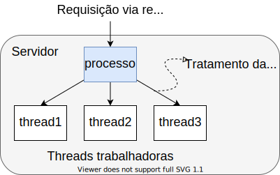
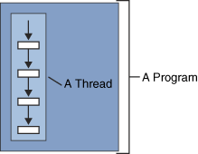
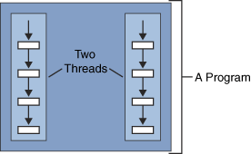
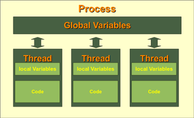

Universidade Atlântica
Programação Concorrente
Aula 12
Programação Avançada
Universidade Atlântica
Aula 12
Fernanda Passos
Programação Avançada
| Modo | Características |
|---|---|
| Threads | Paralelismo, chamadas de sistema bloqueantes. |
| Processo monothread | Sem paralelismo, chamadas de sistema bloqueantes. |
| Máquina de estado finito | Paralelismo, chamadas de sistema não bloqueantes. |

Definação:


import multithreading
import threading
# Função que a thread irá executar.
def meu_thread(id):
print('Sou um thread de id', id)
# Thread (processo) principal irá criar 5 threads.
for i in range(5):
# Cria thread com argumento i para identificar.
t = threading.Thread(target=meu_thread, args=(i,))
# Inicia execução do thread.
t.start()struct.